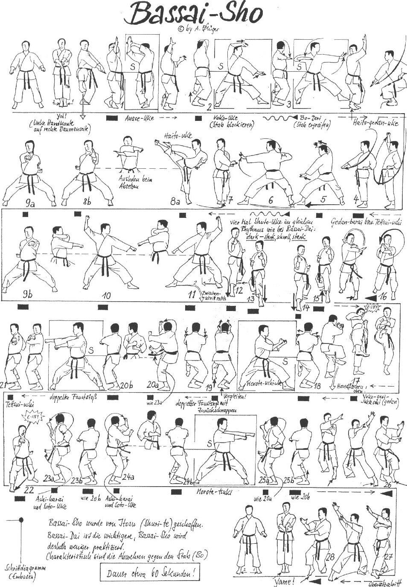

Bassai Sho

- Yoi andando in Eisoku Dachi braccia stese verso il basso, Shuto sinistro che appoggia su Haito destro.
- Carico all'orecchio sinistro e dopo aver eseguito Hittsui Geri destro eseguo una parata alta laterale dall’interno verso l’esterno (Sokumen Jodan Uchi Uke) destra con le mani aperte in verticale a 90° tra loro dx interna in Migi Kosa Dachi.
- Sposto indietro la gamba sinistra ruoto di 180° in Kokutzu Dachi ed eseguo Age Uke destro e Yohon Nukite sinistro orizzontale col dorso della mano verso il basso.
- Richiamo verticalmente all’altezza della spalla le mani aperte simulando la rottura del gomito (Tsukami Uke).
- Richiamo la gamba destra e ruotando di ¾ di schiena eseguo Gedan Haito Uke destro che prosegue la circonferenza finendo in Gedan Barai in Heisoku Dachi.
- Avanzo con la gamba sinistra in Kokutzu Dachi ed eseguo Age Uke destro e Yohon Nukite sinistro orizzontale col dorso della mano verso il basso.
- Eseguo ancora Tsukami Uke con la mano sinistra avanzata.
- Richiamo la gamba destra ruotando verso sinistra di 90° in Hachiji Dachi e porto il pugno sinistro e la mano destra aperta sopra il pugno al fianco sinistro.
- Eseguo contemporaneamente Yoko Geri e Haito Uchi destro.
- Richiamo Yoko Geri e scendo in Kiba Dachi frontale eseguendo Tate Shuto sinistro.
- Ren Tzuki mantenendo la posizione.
- Ruoto il piede sinistro di 90° andando in Hidari Kokutzu Dachi ed eseguo contemporaneamente Jodan Uchi Uke destro Gedan Barai sinistro.
- Faccio perno sui talloni e ruoto di 180° in Migi Kokutzu Dachi ed eseguo contemporaneamente Jodan Uchi Uke sinistro Gedan Barai destro.
- Unisco il piede sinistro al destro e ruotando di 90° verso destra avanzando in Migi Kokutzu Dachi eseguo Shuto Uke.
- Avanzo ancora due volte con Shuto Uke in Kokutzu Dachi.
- Ruoto le anche andando in Zenkutsu Dachi e vado in presa verso l'alto con il braccio destro e la mano sinistra appoggiata sul polso come rinforzo.
- Carico ed eseguo Yoko Geri Gedan tirando i pugni al fianco destro. Kiai.
- Senza appoggiare il piede destro lo richiamo al ginocchio sinistro ed eseguo Mawatte mentre scendo lo allargo in Kokutzu Dachi ed eseguo doppio Uchi Uke.
- Piccolo Tsuri Ashi e contemporaneamente eseguo doppio Kizami Tzuki senza ruotare i polsi.
- Avanzo eseguendo contemporaneamente Soto Uke e Deashi Barai destri e completo lo spostamento in Kiba Dachi destro eseguendo Yama Tzuki orizzontale.
- Carico ed eseguo Tettsui Uchi sinistro verso sinistra cambiando direzione.
- Avanzo in Zenkutsu Dachi ed eseguo Chudan Oi Tzuki.
- Mawatte eseguendo contemporaneamente Soto Uke e Deashi Barai destri e completo lo spostamento in Kiba Dachi destro eseguendo Yama Tzuki orizzontale.
- Avanzo con la stessa tecnica ancora due volte prima sinistro e poi destro.
- Sposto posteriormente di 45° la gamba sinistra e ruotando il tronco verso sinistra eseguo insieme Gedan Arai sinistro e Jodan Arai destro.
- Ruoto le anche e andando in Hidari Neko Ashi Dachi inverto la posizione delle mani con un movimento circolare frontale trovandomi con le mani aperte verticali con la sinistra sopra.
- Sposto 90° la gamba sinistra scavalcando la destra ed eseguo insieme Gedan Arai destro e Jodan Arai sinistro.
- Sposto la gamba destra in Migi Neko Ashi Dachi inverto la posizione delle mani con un movimento circolare frontale trovandomi con le mani aperte verticali con la destra sopra.
- Richiamo la gamba e la mano destra e torno alla posizione iniziale con le mani aperte sovrapposte.
- Yame!